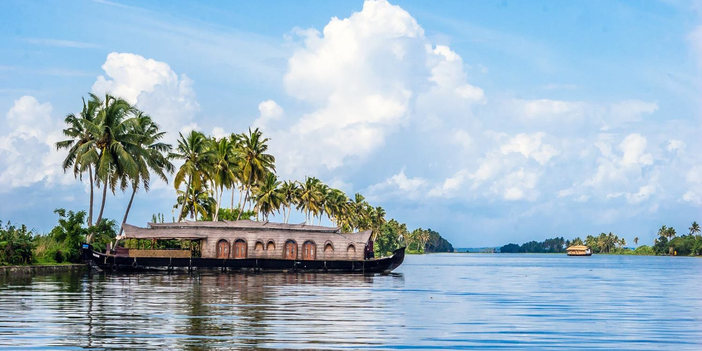

Kumarakom Backwaters
Kumarakom, nestled on the banks of Vembanad Lake, offers a mesmerizing experience through its serene backwaters. The intricate network of canals, lagoons, and lakes makes Kumarakom an ideal destination for houseboat cruises. Visitors can glide through the calm waters, surrounded by lush greenery and quaint villages, witnessing the unique lifestyle of the region. The backwaters of Kumarakom provide a tranquil escape, allowing guests to unwind amidst nature's beauty and enjoy the peaceful ambiance that defines this scenic destination.
Vembanad Lake
As one of the largest lakes in India and a centerpiece of the Kottayam district, Vembanad Lake is a majestic waterbody that contributes to the charm of Kumarakom. The lake spans across several districts and offers stunning views of its expansive waters against the backdrop of the Western Ghats. Boating on Vembanad Lake allows visitors to soak in the panoramic landscapes, witness vibrant birdlife, and experience the cultural richness of the surrounding villages, making it a quintessential part of the Kumarakom backwaters.

Illikkal Kallu

Illikkal Kallu, translating to "Moonrock," stands as a thrilling trekking destination for adventure enthusiasts near Kottayam. This peak offers more than just a challenging trek; it provides breathtaking panoramic views of the Western Ghats and the surrounding landscapes. The journey takes visitors through lush greenery and rocky terrains, creating a perfect blend of adventure and natural beauty. Upon reaching the summit, the trek becomes a rewarding experience, unveiling a vista that captures the essence of the Kerala highlands. Beyond its role as a haven for trekking, Illikkal Kallu transforms into a serene spot for those seeking to connect with nature.
Amidst the pristine surroundings, one can appreciate the beauty of the highlands, making it a memorable destination that combines adventure with the tranquility of Kerala's scenic landscape.